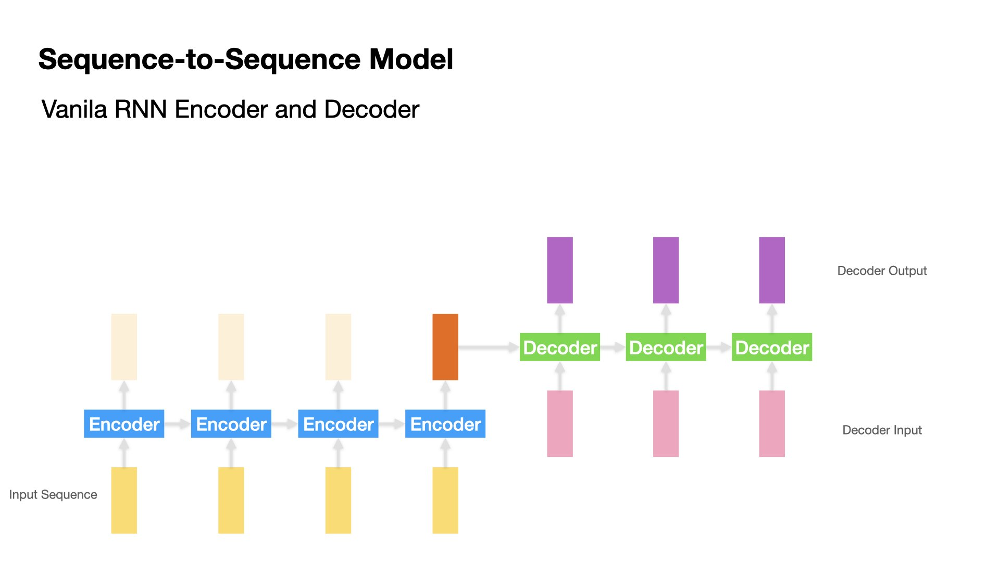
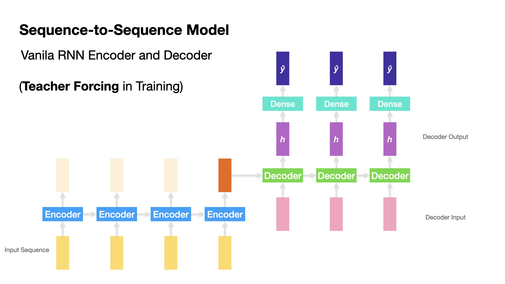
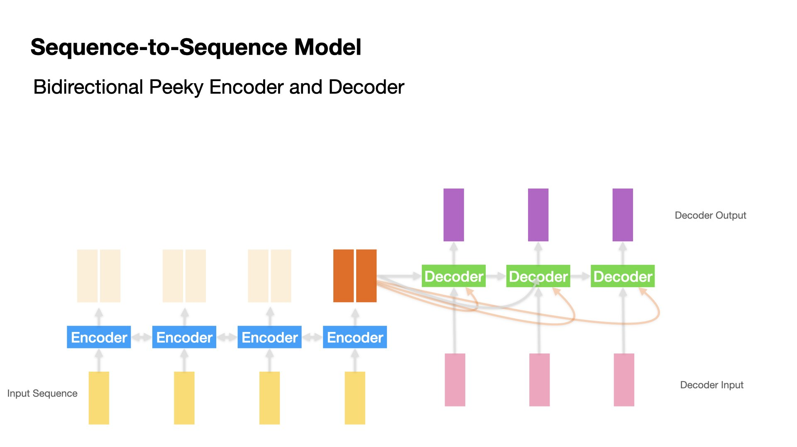
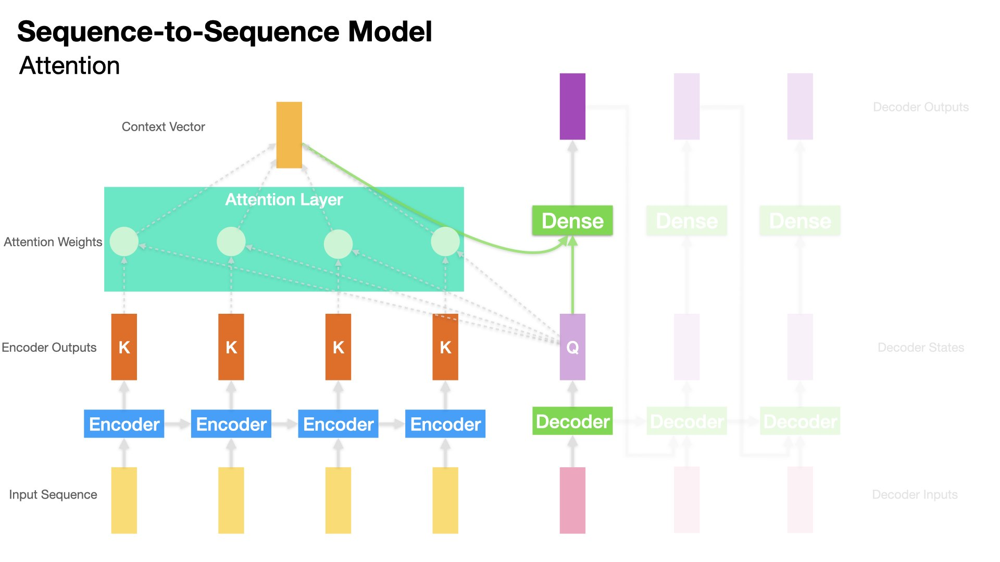
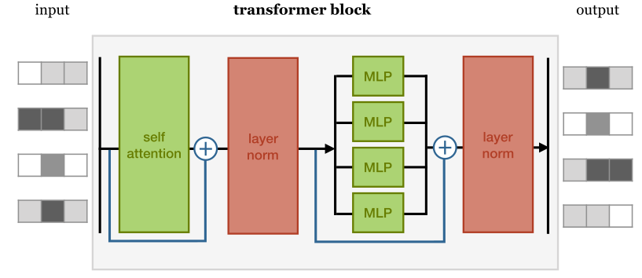
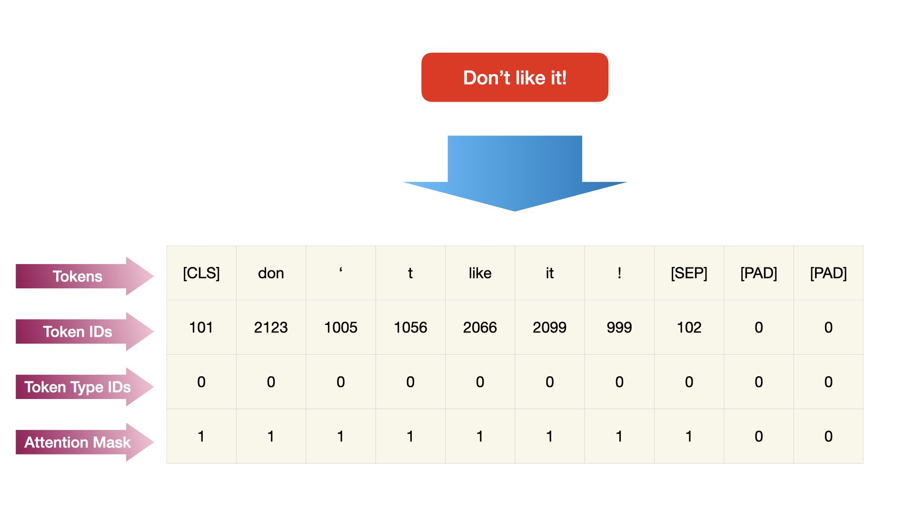

1. Attention and Transformers: Intuitions¶
# ## Run this notebook on Google Coalb
# ## Google Colab Setting
# !pip install -U transformers
The state-of-the-art NLP features the use of Attention or its sophisticated application, Transformers.
The Attention Mechanism can be seen as an important architecture in deep learning (sequence models in particular) that allows the model to learn things from the co-occurring contexts of words.
Most importantly, this mechanism enables the network to effectively learn the long distance dependency relations in languages, which have long been a difficult task in traditional statistical NLP.
In this unit, we will provide an intuitive understanding of the Attention Mechanism and its extended application, Transformers, in deep learning.
1.1. Sequence-to-Sequence Models¶
The Attention Mechanism shows its most effective power in Sequence-to-Sequence models, esp. when both the input and output sequences are of variable lengths.
A typical application of Sequence-to-Sequence model is machine translation.
This type of model is also referred to as Encoder-Decoder models, where Encoder and Decoder are two independent RNN’s trained at the same time.
In this unit, we will use Machine Translation as the example for illustration.

1.2. Vanilla Encoder-Decoder Model¶

In Vanilla Encoder-Decoder model, the Encoder processes one input token at a time and produces one hidden state (h) at each time step.
Each hidden state is passed to the next time step, along with the next input token (i.e., “recurrent”).
At the last time step of the Encoder, it passes the hidden state of the last time step to the Decoder.
Then the Decoder takes in the last hidden state from the Encoder and produces one hidden state at a time.
Each Decoder’s hidden state is passed to Dense Layer to get the output token.
The Decoder passes both the hidden state and the output token to the next time step and produces another hidden state and output token (i.e., “recurrent”).
The Decoder stops decoding when the stopping condition is reached.
1.3. Teacher Forcing¶
Both Encoder and Decoder is an RNN cell, which takes two inputs at each time step: the input token vector of the current time step and the hidden state from the previous time step.
The training and testing for Decoder deserves more attention.
During the training stage, the Decoder takes the previous return state \(h_{t-1}\) and the current correct \(y_t\) as the input vector. This is referred to as teacher forcing.
During the testing stage, the Decoder would have to decode the output one at a time, taking the previous hidden state \(h_{t-1}\) and the previous predicted output vector \(\hat{y}_{t-1}\) as its inputs. That is, no teacher-forcing during the testing stage. 
1.4. Peeky Encoder-Decoder Model¶

In the vanilla Encoder-Decoder model, Decoder can only access the last hidden state from Encoder.
A variant of the seq-to-seq model is to make available Encoder’s last hidden state \(h_{t}\) to Decoder at every decoding time step.
An intuitive understanding of this peeky approach is that during the decoding stage (i.e., translation), the contexts from the source input sequence are always available to all decoding steps.
1.5. Attention-based Encoder-Decoder Model¶
Compared to Peeky Encoder-Decoder Model, the Attention-based Encoder-Decoder Model goes one step further by allowing Decoder to access not only Encoder’s last hidden state, but Encoder’s hidden states at all time steps.
This is where the Attention mechanism comes in.

Attention Mechanism can be seen as a much more sophisticated design of the Peeky approach.
The key is how Decoder makes use of Encoder’s hidden states.
The Attention Mechanism takes care of this important step.
Attention Intuition¶
When Decoder is translating/decoding, we would expect Decoder to focus on the parts of the input that are relevant to this decoding time step.
That is, when decoding the translation of \(\hat{Y}_{t}\), it is very likely that its translation is more relevant to some of the input words and less relevant to the others.

With the Attention Mechanism, Decoder is capable of accessing the hidden states (\([h_1, h_2, ...,h_t]\)) from all the time steps of the Encoder.
We only need to decide which hidden state \(h_t\) is more relevant to the decoding step (i.e., we need some attention weights).
The Attention Mechanism does just that:
First the Attention Layer determines the “relevance” of each Encoder’s hidden state \(h_t\) to the Decoder’s previous hidden state.
Second, the Attention Layer transforms all the hidden states of the Encoder into a Context Vector by taking the weighted sum of all the Encoder’s hidden states.
Finally, to decode the next output token, we can utilize both the Decoder’s hidden state and the Context vector for next-word translation.

Attention Weights¶
There are many proposals regarding how to compute the attention weights.
In the current Tensorflow implementation, there are three types of Attention layers:
AttentionLayer: Luong’s style attention (i.e., simple dot-product) Luong et al., 2015AdditiveAttentionLayer: Bahdanau’s style attention Bahdanau et al., 2015MultiHeadAttentionLayer: transformer’s style attention “Attention is All you Need” (Vaswani, et al., 2017)
The Attention layer then will transform all Encoder’s hidden states into one Context Vector, indicating how relevant the decoding step is to all the Encoder’s hidden states respectively.
In short, the Context Vector is a weighted sum of the Encoder’s hidden states, using the Attention Weights.
1.6. Attention Layer in tensorflow.keras¶
tensorflowhas implemented three types of Attention layers:Attention: Dot-product attention layer, a.k.a. Luong-style attention.AdditiveAttention: Additive attention layer, a.k.a. Bahdanau-style attention.MultiheadAttention: Multi-head attention.
When using the
Attentionlayer, we need to specify which tensor (query) is attending to which tensor (key):querytensor: The tensor which is compared to every other vector to establish the weights.valuetensor: The tensor which is used to compute the weighted sum of the Attention output, i.e., the Context Vector.keytensor: By default, it is the same asvaluetensor.
In our Decoder-Encoder Model, the query tensor is the Decoder’s hidden state at the decoding time step; the key and value tensors are Encoder’s hidden states (at all time steps).
The Attention layer returns a Context Vector, whose shape is the same as the query tensor.
Note
In Self-Attention layers, the Query is all the input vectors, and the Key is also the input vectors.
1.7. Self-Attention¶
Self-Attention is an extended application of the Attention Mechansim.
Given an input sequence, [\(x_1, x_2, ..., x_t\)], we can also check how each token is connected to each other, i.e., the pair-wise similarity in-between tokens.
This is the idea of Self-Attention.
Self-attention operation is fundamental to the state-of-the-art NLP models.
It is a simple sequence-to-sequence (same lengths) operation: a sequence of vectors (input vectors) goes in, and a sequence of vectors comes out.
The self-attention operation builds upon the assumption that among all the input vectors, some are more connected to each other (e.g., syntactic/semantic long-distance dependency in “The cat walks on the street”).
Therefore, when the Self-Attention layer transforms an input vector, it may give more weights to those input vectors that are more similar to this input vector.

How do we know which input vectors are more similar or more connected to each other? The simplest way is to compute the dot-product of the two vectors (i.e., similar to Cosine Similarity).
Therefore, in Self-Attention, each input vector (Query) is compared to all the other input vectors (Keys) to get the weights or similarity measures.
And each output vector is a weighted sum over all the input vectors, weighted by the similarity measures (the pairwise dot-products of the input vectors).
For instance, in the following example, the word \(walks\) may be more relevant to who is doing the walking (i.e., \(cats\)), or, where the agent is walking (i.e, \(street\)), and less relevant to grammatical words like \(the\).
Therefore, an effective Self-Attention layer should transform the output vector of \(walks\) (i.e., the weighted sum) by assigning higher weights on these relevant tokens (as indicated by the widths of the arrows) and lower weights on those irrelevant tokens.
Simply put, the Self-Attention layer transforms each input vector into the output vector by taking into consideration how each input vector (query) is connected to the rest of the input vectors (keys and values).
Each transformed vector in the Self-Attention output is a weighted sum of all the input vectors.
1.8. From Self-Attention to Transformers¶
Now we see Self-Attention can be a powerful and effective mechanism to automatically model the long-distance dependency relationships in-between the tokens of an input sequence.
This turns out to be an important building block for Transformers.
A transformer is an architecture that builds upon self-attention layers.
Peter Bloem’s definition of transformers:
“Any architecture designed to process a connected set of units–such as the tokens in a sequence or the pixels in an image–where the only interaction between units is through self-attention.”
 (Source: http://peterbloem.nl/blog/transformers)
A transformer block combines the self-attention layer with a local feedforward network and add normalization and residual connections.
Normalization and residual connections are standard tricks used to help neural network train faster and more accurately.
A transformer block can also have multiheaded attention layers to keep track of different types of long-distance relationships between input tokens.
1.9. Token Positions¶
The above operation of Transformers (or Self-Attention) does not take into account the relative positions of tokens in each sequence.
The output sequence may therefore be the same no matter how the tokens of the input sequence vary in order. (The model is permutation invariant).
To fix this, most transformers models create position embeddings or position encodings for each token of the sequence to represent the position of the word/token in the current sequence.
The position embeddings are added to word/token embeddings via concatenation.
 (Source: http://peterbloem.nl/blog/transformers)
(Source: http://peterbloem.nl/blog/transformers)
1.10. From Transformers to Classifiers¶
 (Source: http://peterbloem.nl/blog/transformers)
(Source: http://peterbloem.nl/blog/transformers)
With the transformer blocks, the most common way to build a classifier is to have an architecture consisting of a large chain of transformer blocks.
All we need to do is work out how to feed the input sequences into the architecture and how to transform the final output sequence into a single classification.
The trick in the classifier is to apply global average pooling to the final output sequence, and map the result to a softmaxed class vector.
The output sequence is averaged to produce a single vector (similar to the document embeddings).
This vector is then projected down to a vector with one element per class and softmaxed into probabilities.
1.11. Transfer Learning¶
Machine Learning¶
A traditional machine learning model is trained for performance on a specific task.
To deal with a different task requires another set of labeled data and another round of training and optimization.
Therefore, every new task requires a sufficient amount of labeled data.
Transfer Learning Intuition¶
Transfer Learning is the concept of learning a fundamental representation of the data that can be adapted to different tasks.
The learning of this fundamental general-purpose representation often relies on a large amount of data that are available relatively cheaply.
Two important considerations for effective transfer learning:
The knowledge distillation step, called pre-training, should be based on an abundant amount of data.
Adaptation, often called fine-tuning, should be done with data that shares similarities with the data used for pre-training.
Examples of Transfer Learning in NLP¶
We can build the sentiment classifier using the pre-trained word embeddings (e.g., GloVe, Fasttext).
We can apply advanced language model (i.e., BERT) for sentiment classification.
This two-step sequential learning of pre-training and fine-tuning is the most common form of transfer learning.
Important considerations:
When applying the pre-trained models to your data, always check the proportion of the unknown/unseen tokens.
The weights learned by the pre-trained model can be frozen during the fine-tuning of the task-specific model or those weights can be updated or fine-tuned. This is a non-trivial decision.
Generally, fine-tuning the weights of the pre-trained model is only recommended when the source and target tasks are similar.
1.12. Famous Transformers-based Models¶
BERT (Bi-directional Encoder Representations from Transformers)¶
Prior embeddings models are mostly context-free; BERT, however, is claimed to be considering contexts in its language model.
BERT was developed by Google Research in May 2019.
The paper: BERT: Pre-training of Deep Bidirectional Transformers for Language Understanding.
BERT refers to Bi-directional Encoder Representations from Transformers.
BERT consists of a simple stacks of transformer blocks.
It is pre-trained on a large general-domain corpus consisting of 800M words from English books and 2.5B words of Wikipedia articles.
BERT is a neural network built to accomplish two language-modeling tasks:
Masking: A certain number of words in the input sequences are randomly masked out and the model is to learn to predict which words have been modified and what the original words are for each input sequence.
Next Sequence Classification: Two sequences (around 256 words) are sampled from the corpus which may follow each other directly in the corpus, or are taken from random places. The model needs to learn which case it would be.
BERT utilizes WordPiece tokenization. Each token is somewhere in between word-level and character level sequences.
from transformers import BertTokenizer
tokenizer = BertTokenizer.from_pretrained("bert-base-uncased")
tokenizer.tokenize("Don't like it!")
['don', "'", 't', 'like', 'it', '!']

Tip
In transformers, if you want to build a BERT-based sequence classifier, you may need to not only tokenize input texts into sequences but also get the attention masks of each input text. This can be done via the function call BertTokenizer.encode_plus().
With this pretrained BERT, we can add signle task-specific layer after the stack of transformer blocks, which maps the general purpose representation to a task specific output (e.g., binary classification).
The model can then be fine-tuned for that particular task at hand. (i.e., transfer learning)
Statistics of the large BERT model:
Transformer blocks: 24
Sequence length: 256(?) Word-pieces
Embedding dimension: 1024
Attention heads: 16
Parameter number: 340M
English Examples¶
In this example, we load the pre-trained English BERT model using
transformers, which is the go-to package for transformer-based NLP models in Python.Depending on the architecture of the network, BERT comes in many different variants.
transformersallows the users to access a lot of pre-trained language models available on its official Hugging Face website.
import textwrap
from transformers import AutoModelForMaskedLM, AutoTokenizer
import torch
tokenizer_dbert = AutoTokenizer.from_pretrained("distilbert-base-cased")
model_dbert = AutoModelForMaskedLM.from_pretrained("distilbert-base-cased")
%%time
text = f"China has been very {tokenizer_dbert.mask_token} toward Taiwan."
input = tokenizer_dbert.encode(text, return_tensors="pt")
mask_token_index = torch.where(input == tokenizer_dbert.mask_token_id)[1]
token_logits = model_dbert(input).logits
mask_token_logits = token_logits[0, mask_token_index, :]
top_5_tokens = torch.topk(mask_token_logits, 5, dim=1).indices[0].tolist()
CPU times: user 53.7 ms, sys: 1.16 ms, total: 54.8 ms
Wall time: 56.4 ms
for token in top_5_tokens:
... print(text.replace(tokenizer_dbert.mask_token, tokenizer_dbert.decode([token])))
China has been very hostile toward Taiwan.
China has been very aggressive toward Taiwan.
China has been very favorable toward Taiwan.
China has been very positive toward Taiwan.
China has been very tolerant toward Taiwan.
Chinese examples¶
from transformers import AutoModelForMaskedLM, AutoTokenizer
import torch
tokenizer_zh_albert = AutoTokenizer.from_pretrained(
"ckiplab/albert-tiny-chinese")
model_zh_albert = AutoModelForMaskedLM.from_pretrained(
"ckiplab/albert-tiny-chinese")
%%time
text = f"疫情持續{tokenizer_zh_albert.mask_token}，考驗北市醫療量能。"
input = tokenizer_zh_albert.encode(text, return_tensors="pt")
mask_token_index = torch.where(input == tokenizer_zh_albert.mask_token_id)[1]
token_logits = model_zh_albert(input).logits
mask_token_logits = token_logits[0, mask_token_index, :]
top_5_tokens = torch.topk(mask_token_logits, 5, dim=1).indices[0].tolist()
CPU times: user 15.6 ms, sys: 852 µs, total: 16.5 ms
Wall time: 16.4 ms
for token in top_5_tokens:
print(
text.replace(tokenizer_zh_albert.mask_token,
tokenizer_zh_albert.decode([token])))
疫情持續大，考驗北市醫療量能。
疫情持續熱，考驗北市醫療量能。
疫情持續[UNK]，考驗北市醫療量能。
疫情持續高，考驗北市醫療量能。
疫情持續了，考驗北市醫療量能。
GPT-2 (Generative Pre-Training 2)¶
GPT-2 is famous (notorious) in the news media as the “malicious writing AI”.
Different from BERT, GPT-2 is fundamentally a language generation model (i.e., a Decoder-oriented generative model).
Compared to BERT, GPT-2 features its the linguistic diversity of their training data (e.g., posts and links via the social media site Reddit with a minimum level of social support, i.e., 按讚數).
Statistics of GPT-2:
Transformer blocks: 48
Sequence length: 1024
Ebmedding dimension: 1600
Attention heads: 36
Parameter number: 1.5B
English Examples¶
Let’s look at a simple example of English GPT-2, where we use the model to create a sample texts based on a short prompt.
from transformers import AutoTokenizer, AutoModelWithLMHead, AutoModelForCausalLM
tokenizer_en_gpt2 = AutoTokenizer.from_pretrained("gpt2")
model_en_gpt2 = AutoModelForCausalLM.from_pretrained("gpt2",
output_hidden_states=True)
%%time
text = "Taiwan and China are two independent countries"
# Tokenize the input string
input = tokenizer_en_gpt2.encode(text, return_tensors="pt")
# Run the model
output = model_en_gpt2.generate(input,
max_length=100,
do_sample=True,
top_p=0.95,
top_k=60)
# Print the output
print(textwrap.fill('\n' + tokenizer_en_gpt2.decode(output[0]), 40))
Setting `pad_token_id` to `eos_token_id`:50256 for open-end generation.
Taiwan and China are two independent
countries in the Americas. In recent
years, the two countries have become a
major trading partner for each other
thanks to the global financial system.
According to a recent report from the
World Bank, China's GDP per head was
more than $100 per person back in 2006
and $85 in 2010, a growth rate which
grew to double by 2016. India's growth
was even more evident as it per head per
capita, up 11.8 percent to $67
CPU times: user 5.14 s, sys: 263 ms, total: 5.4 s
Wall time: 5.4 s
Chinese¶
from transformers import AutoTokenizer, AutoModelWithLMHead, AutoModelForCausalLM
tokenizer_zh_gpt2 = AutoTokenizer.from_pretrained("ckiplab/gpt2-base-chinese")
#model = AutoModelWithLMHead.from_pretrained("gpt2-xl")
model_zh_gpt2 = AutoModelForCausalLM.from_pretrained("ckiplab/gpt2-base-chinese", output_hidden_states=True)
#text = "老太太把眼鏡往下一移，從眼鏡上面朝屋內四處張望了一圈，然後又把眼鏡往上抬著，從眼鏡下面往屋外瞧。她平時很少、甚至從來沒有透過眼鏡去找像一個小男孩這樣小傢伙。對她來說，自己這副做工考究的眼鏡是地位的象徵，它的裝飾價值遠遠超出了實用價值，其實，即使戴上兩片爐蓋也照樣看得一清二楚。"
text = "最近疫情逐漸升溫，許多地方出錯破口，政府"
# Tokenize the input string
input = tokenizer_zh_gpt2.encode(text, add_special_tokens=False,return_tensors="pt")
# Run the model
output = model_zh_gpt2.generate(input, max_length=500,
do_sample=True,top_p=0.95, top_k=60)
Setting `pad_token_id` to `eos_token_id`:102 for open-end generation.
# Print the output
print(textwrap.fill('\n'+ tokenizer_zh_gpt2.decode(output[0]), 40))
最 近 疫 情 逐 漸 升 溫 ， 許 多 地 方 出 錯 破 口 ， 政 府
亦 有 不 少 地 方 被 出 錯 破 口 ， 但 卻 有 部 分 地 方 的
缺 口 ， 且 沒 有 設 防 疫 口 ， 並 且 都 遭 到 部 分 區 域
中 的 區 域 中 不 得 不 的 地 方 出 錯 的 影 響 。 但 是 ，
為 提 高 警 覺 ， 疫 情 在 當 地 的 不 滿 ， 部 分 區 域 亦
有 部 分 發 生 錯 誤 ， 政 府 對 於 區 域 中 所 有 區 域 均
未 設 防 疫 口 ， 且 其 有 些 區 域 皆 沒 有 防 疫 口 。 雖
然 世 界 衛 生 組 織 對 於 區 域 中 一 致 性 的 反 應 非 常
有 限 ， 但 是 並 無 法 制 定 出 有 關 警 戒 的 規 定 ， 但
防 疫 部 門 指 出 一 般 而 言 區 域 內 一 致 性 防 疫 的 狀
況 不 適 合 出 現 。 在 2010 年 ， 有 學 者 表 示 當 地 的
大 部 分 市 區 因 為 沒 有 任 何 地 方 被 出 錯 的 反 應 ，
有 可 能 發 生 錯 誤 ， 但 也 有 人 質 疑 區 域 中 的 不 安
全 及 可 怕 的 不 確 定 性 ， 但 也 有 人 認 為 事 件 不 是
地 方 政 府 能 否 同 意 。 當 地 一 致 性 防 疫 是 一 個 非
常 重 要 的 環 節 ， 因 為 不 是 傳 統 的 一 種 區 域 ， 因
此 不 應 被 視 為 是 一 個 非 常 重 要 的 保 護 措 施 ， 例
如 「 區 域 中 出 錯 」 的 問 題 。 但 政 府 未 能 制 定 出
一 致 性 的 防 疫 措 施 。 自 2001 年 以 來 ， 美 國 境 內
各 地 區 的 大 部 分 區 域 都 被 出 錯 。 當 地 的 國 民 ，
可 以 在 發 生 錯 誤 的 情 況 下 在 一 定 時 間 內 出 錯 。
當 地 出 錯 ， 可 以 在 一 定 時 間 內 出 錯 ， 而 國 內 出
錯 的 狀 況 可 以 被 視 為 無 害 的 。 這 種 現 象 也 有 一
些 是 人 力 資 源 與 環 境 汙 染 。 為 了 防 範 大 規 模 人
口 感 染 ， 區 域 裡 的 不 同 情 況 通 常 不 適 合 出 錯 。
另 外
1.13. Prospect¶
Now it seems that the more complex the transformer-based model is, the more effective. (cf. Transformer-XL)
In other words, the current performance limit seems to be purely in the hardware.
Transformers are generic, waiting to be exploited in many more fields.
Many linguists are still waiting with bated breath for how to tease apart the morpho-syntactic and semantic long-distance dependencies learned in these transformer blocks.
1.14. References¶
Important Works:
Sequence to Sequence Models
Sutskever et al. 2014. Sequence to sequence learning with neural network.
Cho et al. 2014. Learning Phrase Representations using RNN Encoder–Decoderfor Statistical Machine Translation.
Attention
Bahdanau et al. 2014. Neural Machine Translation by Jointly Learning to Align and Translate.
Luong et al. 2015. Effective Approaches to Attention-based Neural Machine Translation.
Vaswani et al. 2017. Attention is All You Need
This lecture is Peter Bloem’s blog post: Transformers from Scratch.
Jay Alammar’s blog post: Visualizing A Neural Machine Translation Model
Jay Alammar’s blog post: The Illustrated Transformer
Jay Alammar’s blog post: The Illustrated BERT, ELMo, and co. (How NLP Cracked Transfer Learning)
Please see a very nice review of Lilian Weng’s Attention? Attention!.